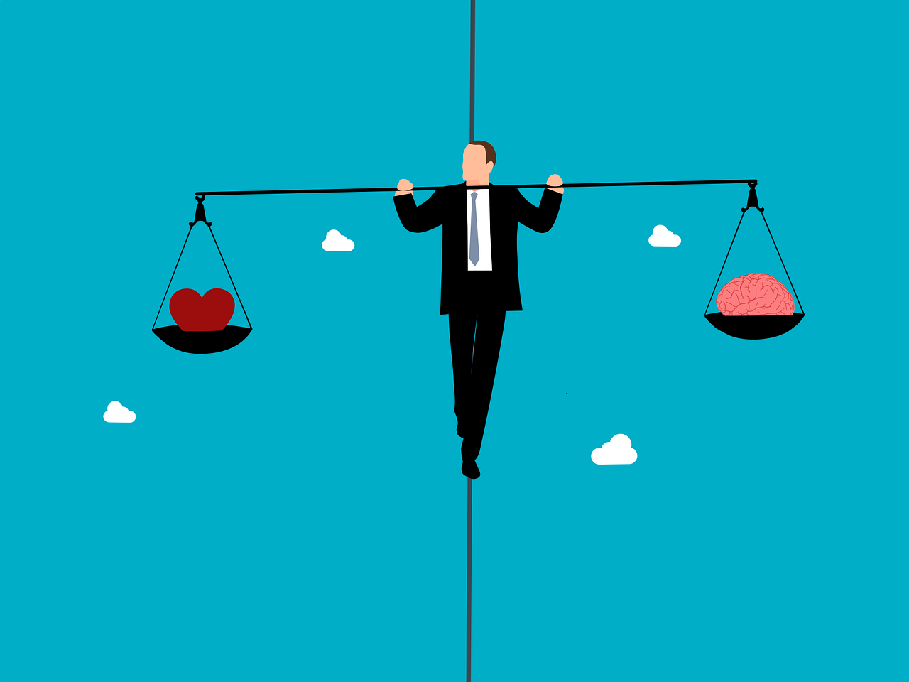

De ce este esențial să-ți controlezi emoțiile
Atunci când ești stresat sau agitat, corpul și mintea ta au nevoie de o pauză pentru a-și regăsi echilibrul interior.
Cum să-ți găsești echilibrul între viața personală și cea profesională

Fii prezent în momentul actual:
Evită multitaskingul și acordă atenție reală fiecărei activități.
Îngrijește-ți sănătatea fizică și mintală:
Dormi suficient, fă sport și fă și ceea ce îți place.
Prioritizează-ți sarcinile:
Alegerea corectă nu este întotdeauna și cea mai plăcută.
Fii flexibil și adaptabil:
Acceptă schimbările și păstrează o perspectivă realistă.
Relaxează-te ca să îți menții productivitatea:
Pauzele scurte și dese te ajută să eviți burnout-ul și să rămâi concentrat.